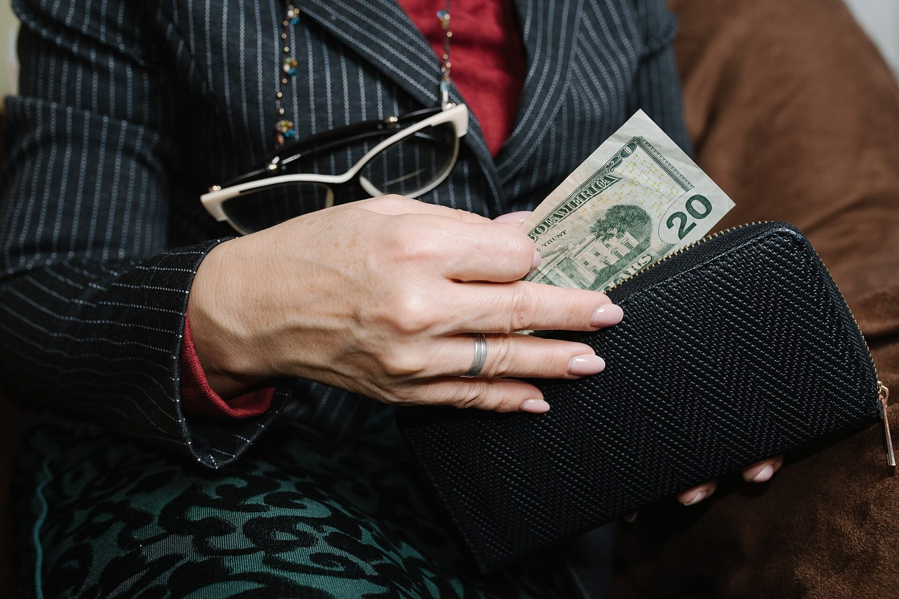

¿Cuánto te cuesta tu banco? Cargos de la cuenta de cheques
Calculadora gratis de lo que te cuesta tu banco en cargos e intereses perdidos, con datos de sobregiro del CFPB y tasas promedio de la FDIC a noviembre de 2026.
Z Zar · 28 de noviembre de 2026 — 12 min de lectura

Tu banco te cuesta en cargos y en intereses que no ganas. Según el CFPB, el cargo por sobregiro mediano en bancos grandes es $35 (dic. 2022 a ago. 2023), y el promedio nacional de la FDIC en cuentas de cheques con intereses es 0.07% en el nivel de $2,500 (16 de nov. de 2026), frente a 3.2% en la cuenta de ahorros de Ally (24 de nov. de 2026). Con $8,000, solo esa diferencia son unos $250 al año.
Parte de nuestra Budget & Debt Guide (guía de presupuesto y deudas, en inglés), el grupo de banca cotidiana.
Esto es información, no asesoría financiera; los APY y los cargos cambian, así que confirma las condiciones vigentes antes de abrir cualquier cuenta.
Una pregunta rápida antes de seguir: ¿sabes de memoria cuál es el APY de tu cuenta de cheques? La mayoría de la gente no, y en ese vacío es donde se fuga el dinero. Esta guía te da una calculadora para encontrar tu propia cifra, y luego explica cómo son los costos y qué cuentas los evitan. Para una lista ordenada de cuentas sin cargo mensual, mira nuestra comparación de cuentas de cheques sin comisiones; para las mejores tasas de ahorro, nuestra guía de cuentas de ahorro de alto rendimiento.
Lo que paga y cobra cada cuenta (a las fechas indicadas)
| Cuenta | APY (a la fecha) | Cargo mensual | Sobregiro y cajeros automáticos |
|---|---|---|---|
| Promedio nacional de la FDIC (referencia) | 0.39% ahorros; 0.07% cuentas de cheques con intereses (16 nov 2026) | n. d. | n. d. |
| Ally Bank Savings | 3.2% variable (a 24 nov 2026) | $0 | Cuenta de ahorros; sin cargos por sobregiro |
| Ally Bank Spending (cuenta de cheques) | 0.10% con menos de $15,000; 0.25% con $15,000 o más (a 24 nov 2026) | $0 | $0 en cargos por sobregiro; reembolso de hasta $10 por ciclo de estado de cuenta en cargos de cajeros de otros bancos |
| Capital One 360 Checking | Tasa no visible en la página de Capital One cuando la revisamos (25 nov 2026) | $0 | Sobregiro sin cargo si depositas al menos $250 en dos de los últimos tres meses; más de 70,000 cajeros automáticos sin cargo |
Las tasas variables cambian sin previo aviso; revisa la tasa vigente en la página de cada banco antes de actuar.
La cifra que nadie calcula
Tu banco te cobra de dos maneras, y solo una aparece como «cargo». Los costos visibles son el cargo mensual de mantenimiento, los cargos por sobregiro y por fondos insuficientes (NSF) y los cargos por usar cajeros automáticos fuera de la red. El sobregiro es el mejor documentado: en un monitoreo de mercado entre diciembre de 2022 y agosto de 2023, el CFPB encontró un cargo por sobregiro mediano de $35 entre los 119 bancos y cooperativas de crédito con más de $10 mil millones en activos que lo cobraban, y un cargo por fondos insuficientes mediano de $32. Los cargos mensuales y de cajeros varían según el banco y la cuenta; la tabla de arriba muestra lo que cobran hoy dos bancos grandes.
Los costos del sobregiro también están concentrados. El CFPB informó que casi 80% de los cargos combinados por sobregiro y fondos insuficientes los pagaron menos de 9% de los titulares de cuenta, los que tienen más de 10 sobregiros al año. Con un cargo de $35, 11 sobregiros al año costarían $385.
El costo invisible son los intereses a los que renuncias. El promedio nacional de la FDIC fue de 0.07% en cuentas de cheques con intereses y de 0.39% en ahorros (el nivel de $2,500) al 16 de noviembre de 2026. Si mantienes $8,000 en una cuenta que paga 0.07% mientras una cuenta de ahorros paga 3.2%, dejas de ganar unos $250 al año en intereses (sin contar el interés compuesto). Eso no aparece como cargo en ningún estado de cuenta; es dinero que simplemente nunca llega. Suma los dos costos y tendrás lo que de verdad te cuesta quedarte donde estás.
Gran parte de ese costo se puede evitar. Ally cobra $0 de mantenimiento mensual y $0 en cargos por sobregiro en su cuenta Spending, y Capital One 360 Checking no tiene cargo mensual por servicio. Lo difícil no es encontrar una cuenta mejor, sino calcular cuánto te cuesta la actual para que el cambio valga los veinte minutos.
Encuentra tu cifra
Mueve los controles de abajo para reflejar tu situación: tu saldo promedio, tu cargo mensual, cuántas veces te sobregiras al año y tu APY actual (si no lo sabes, míralo en tu estado de cuenta; el promedio nacional de la FDIC en cuentas de cheques con intereses es 0.07%). La calculadora suma los cargos que pagas a los intereses que dejas de ganar frente a una tasa de ahorros de 3.2%, y te muestra el costo anual real. Usa el cargo por sobregiro mediano del CFPB, $35, así que ajústalo al de tu banco.
Cuéntanos qué pasó.
Moviste los controles. ¿Cuál fue tu cifra? ¿Más grande de lo que esperabas, o más pequeña? Y si ya te cambiaste a una cuenta sin cargos, ¿coincidió el cálculo con lo que viste en realidad?
Déjala en los comentarios de abajo: es público y toma diez segundos. O responde al correo: es privado, cuéntanos tu historia.
Qué hace que valga la pena cambiarte de cuenta
Cuando ya conoces tu cifra, la decisión se simplifica. Una buena cuenta para el día a día cumple tres requisitos.
Primero, sin cargo mensual y sin condiciones. No «sin cargo si mantienes $1,500 en la cuenta» ni «sin cargo con depósito directo»: simplemente sin cargo. La cuenta Spending de Ally y Capital One 360 Checking indican un cargo mensual de $0 sin saldo mínimo para conservarlo.
Segundo, efectivo que gane algo. Las cuentas de cheques pagan poco (la cuenta Spending de Ally paga 0.10% con menos de $15,000 y 0.25% con más, a 24 de noviembre de 2026), así que lo habitual es combinar una cuenta de cheques sin cargos para tus gastos con una cuenta de ahorros de alto rendimiento para todo lo que no necesitas este mes. La cuenta de ahorros de Ally pagaba 3.2% variable en esa fecha, frente al 0.39% del promedio nacional de ahorros de la FDIC.
Tercero, sobregiro y acceso a efectivo baratos. Ally cobra $0 en cargos por sobregiro y reembolsa hasta $10 por ciclo de estado de cuenta en cargos de cajeros de otros bancos; Capital One indica más de 70,000 cajeros sin cargo y una opción de sobregiro sin cargo si depositas al menos $250 con regularidad. Lee las condiciones: son las que deciden si el cargo realmente es $0 para ti.
Si quieres ver el sistema más amplio en el que encajan estas cuentas, nuestra guía sobre cómo automatizar tus finanzas por completo (en inglés) muestra dónde entra la cuenta de cheques, y nuestro análisis de las mejores cuentas money market explica dónde guardar el efectivo que no necesitas este mes.
Las opciones que recomendamos
Las tasas se mueven, así que tómalas como un punto de partida y confirma antes de abrir cualquier cuenta. Quitamos las cuentas cuyas condiciones vigentes no pudimos confirmar en la página del propio banco (mira Qué cambió).
Ally Bank es la que le daríamos a quien solo quiere que funcione: $0 de cargo mensual, $0 en cargos por sobregiro, una tasa de ahorros variable de 3.2% (a 24 de noviembre de 2026) y CoverDraft, que cubre hasta $100 (hasta $250 con depósitos directos que califiquen) y no es una línea de crédito.
Capital One 360 suma acceso sin cargo a cajeros en las redes Capital One, MoneyPass y Allpoint (más de 70,000 a 18 de septiembre de 2026) y una opción de sobregiro sin cargo para quienes depositan al menos $250 en dos de los tres meses anteriores. No pudimos leer su APY actual de ahorros ni de cuenta de cheques en la página de Capital One, así que revisa la tasa vigente ahí.
Nuestra opinión: la configuración más barata es sin cargo mensual, sin cargo por sobregiro y con una cuenta de ahorros aparte que pague varias veces el promedio nacional. No hay un ganador único; hay la que se ajusta a cómo usas el efectivo en realidad.
Preguntas frecuentes
¿Cuánto cuesta al año una cuenta bancaria promedio?
No hay una cifra oficial única. Los cargos mensuales, los sobregiros y los cargos de cajeros varían según el banco, y el trabajo del CFPB sobre sobregiros muestra que el costo está concentrado: casi 80% de los cargos por sobregiro y fondos insuficientes recae en menos de 9% de los titulares. Usa la calculadora con tus propios números en vez de un promedio.
¿Cuántos intereses pierdo por dejar mi efectivo en la cuenta de cheques?
Al 16 de noviembre de 2026, el promedio nacional de la FDIC era 0.07% en cuentas de cheques con intereses y 0.39% en ahorros. Frente a una cuenta de ahorros de 3.2%, $8,000 ganan unos $250 más al año, sin contar el interés compuesto. La diferencia crece con tu saldo, y la tasa de ahorros es variable.
¿Cuánto es un cargo por sobregiro típico?
El CFPB encontró un cargo por sobregiro mediano de $35 en los 119 bancos y cooperativas de crédito con más de $10 mil millones en activos que lo cobraban (diciembre de 2022 a agosto de 2023). Algunos bancos cobran $0: Ally indica $0 en cargos por sobregiro. Revisa la tabla de cargos de tu propio banco.
¿Las redes de cajeros sin cargo son realmente gratis?
Solo dentro de la red y bajo las condiciones de la cuenta. Capital One indica más de 70,000 cajeros sin cargo en tres redes, y Ally reembolsa hasta $10 por ciclo de estado de cuenta en cargos de cajeros de otros bancos. Fuera de esos límites, el dueño del cajero y tu banco pueden cobrar cada uno.
 | ¿Quieres el panorama completo? Esto es parte de nuestra Budget & Debt Guide (en inglés). Y nos encantaría saber: ¿qué cifra te dio la calculadora y te animó a cambiarte? Responde al correo o déjala en los comentarios. Las cifras reales de los lectores dan forma a nuestra próxima guía. |
Descarga gratis el FI Checklist de 6 páginas
Una hoja de ruta paso a paso hacia la independencia financiera, y tener las cuentas correctas es el primer paso. Te llega en cuanto te suscribes.
Enviarme el checklist (en inglés)Qué cambió
- Quitamos SoFi (citábamos «hasta 3.80%») y Charles Schwab Bank (citábamos «~0.4% más reembolsos de cajeros»): las páginas de SoFi y de Schwab bloquearon la lectura automatizada el 28 de noviembre de 2026, así que no pudimos confirmar sus condiciones vigentes y retiramos las cifras.
- Ally: la tabla anterior mostraba 3.10% como si fuera una tasa de cuenta de cheques. Era la tasa de ahorros. La cuenta de ahorros de Ally ahora muestra 3.2% variable (a 24 de noviembre de 2026), y su cuenta Spending (de cheques) paga 0.10% con menos de $15,000 y 0.25% con $15,000 o más.
- Capital One 360: quitamos la cifra de «3.00%»; las páginas de tasas de Capital One no mostraban un APY utilizable el 25 de noviembre de 2026. Agregamos el cargo mensual de $0, la condición de depósito de $250 para el sobregiro sin cargo y la cifra de más de 70,000 cajeros sin cargo.
- Reemplazamos las afirmaciones de promedios nacionales ($13.51 de cargo mensual, $32.75 de sobregiro, $4.70 de cargo de cajero, «casi un tercio de las cuentas sin cargo mensual») por el cargo por sobregiro mediano publicado por el CFPB ($35) y el cargo por fondos insuficientes mediano ($32); no pudimos vincular las demás cifras a una fuente primaria.
- Agregamos las tasas promedio nacionales de la FDIC (0.07% en cuentas de cheques con intereses, 0.39% en ahorros, 16 de noviembre de 2026) como referencia, y recalculamos el ejemplo: $8,000 ahora cuestan unos $250 al año en intereses perdidos (antes eran unos $280 con 0.01% frente a 3.5%).
- Calculadora: el cargo por sobregiro ahora es $35 y la referencia de ahorros 3.2% (antes $32.75 y 3.5%).
- Quitamos la recomendación de libro y la afirmación de que los reembolsos de Schwab son mundiales; el título ya no dice «Mejores» ni «2026», porque la lista de cuentas ahora es corta y cada tasa lleva fecha.
- Agregamos una sección de preguntas frecuentes centrada en costos y enlaces a nuestra comparación de cuentas de cheques sin comisiones y a nuestra guía de ahorro de alto rendimiento para los rankings de cuentas.
Fuentes
- CFPB — Cargos por sobregiro y fondos insuficientes (diciembre de 2023)
- CFPB — Datos destacados: ingresos por sobregiro y fondos insuficientes en 2023
- FDIC — Tasas nacionales y topes de tasas (noviembre de 2026)
- Ally Bank — Cuenta de ahorros en línea (Online Savings Account)
- Ally Bank — Cuenta Spending
- Capital One — 360 Checking (cuenta de cheques)
Última verificación: 28 de noviembre de 2026.